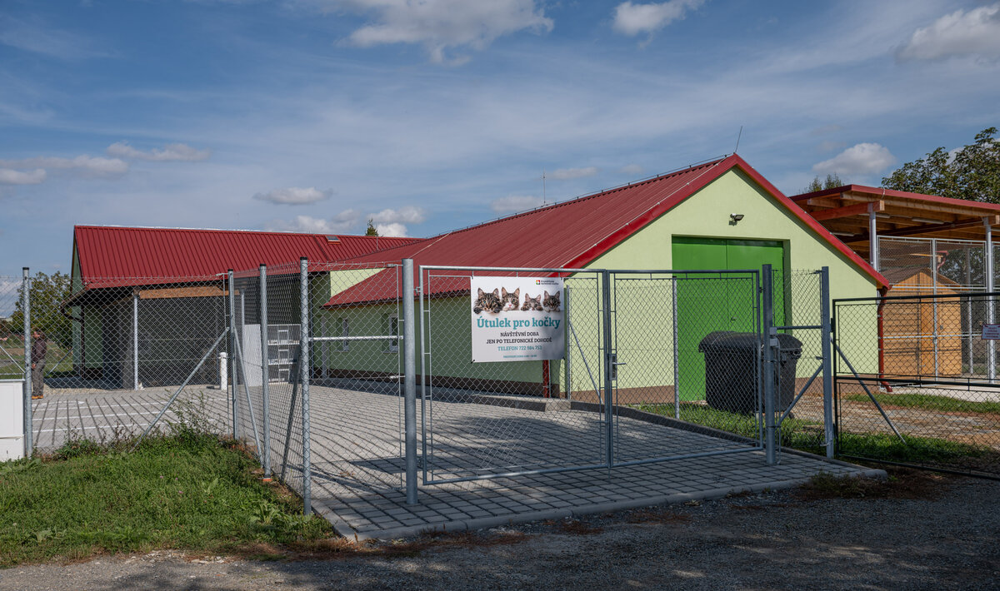

Kde nás najdete
Kočičí útulek MňauDomov se nachází na klidném místě nedaleko města a je snadno dostupný autem i veřejnou dopravou. V okolí je dostatek parkovacích míst, takže se nemusíte obávat dlouhého hledání. Rádi vás provedeme útulkem a představíme vám všechny naše kočky, pokud si budete přát. Naši pracovníci vám ochotně poradí s výběrem a zodpoví všechny dotazy. Těšíme se na vaši návštěvu.
Pro komunikaci s námi můžete využít telefon, e-mail nebo sociální sítě. Odpovídáme na všechny zprávy co nejrychleji, ale prosíme o trpělivost, pokud máme více práce se zvířaty. Některé dotazy ohledně adopce vyžadují více informací, proto se může odpověď mírně zpozdit. Pokud máte zájem o konkrétní kočku, neváhejte nás kontaktovat předem. Rádi vám domluvíme individuální návštěvu.
Náš útulek je otevřen pro všechny, kteří chtějí navštívit kočky nebo se dozvědět více o adopci. Můžete přijít osobně, zavolat nám nebo napsat e-mail. Naši pracovníci a dobrovolníci jsou připraveni poradit s adopcí a péčí o kočky. Každá návštěva je vítaná a pomáhá nám i kočkám.
Věříme, že komunikace s veřejností je klíčová pro zajištění lepšího života opuštěných koček. Rádi se setkáváme s lidmi, odpovídáme na dotazy a ukazujeme, jak funguje život v útulku. Díky kontaktu s vámi můžeme lépe plánovat péči a zajišťovat, aby kočky měly vše, co potřebují. Děkujeme všem, kteří nám pomáhají a podporují naši práci.